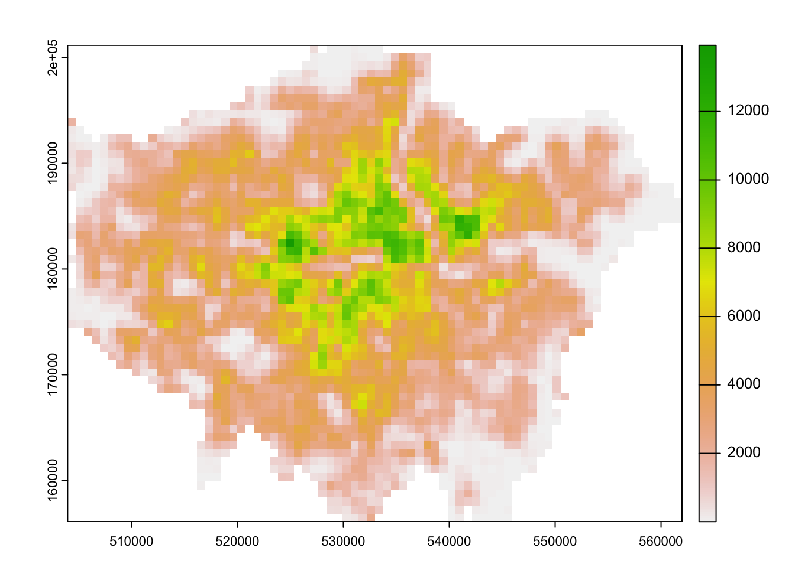
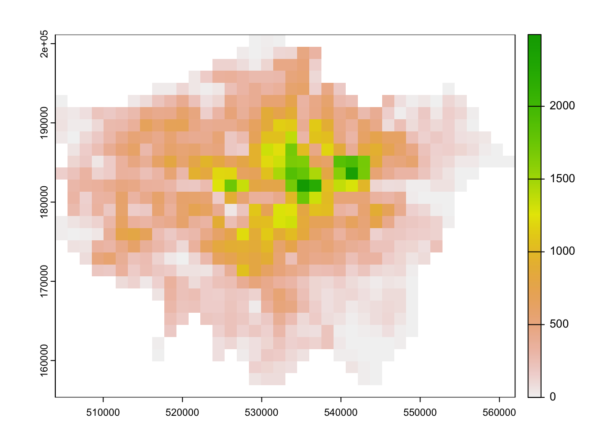

9 Rasters, Zonal Statistics, and Interpolation
The majority of our module has focused on the use of vector data and tabular data. This week, we switch it up by focusing primarily on raster data and its analysis using map algebra and zonal statistics.
9.1 Lecture slides
The slides for this week’s lecture can be downloaded here: [Link]
9.2 Reading list
Essential readings
- Gimond, M. 2021. Intro to GIS and spatial analysis. Chapter 14: Spatial Interpolation. [Link]
- Heris, M., Foks, N., Bagstad, K. 2020. A rasterized building footprint dataset for the United States. Scientific Data 7: 207. [Link]
- Thomson, D., Leasure, D., Bird, T. et al. 2022. How accurate are WorldPop-Global-Unconstrained gridded population data at the cell-level?: A simulation analysis in urban Namibia. Plos ONE 17:7: e0271504. [Link]
Suggested readings
- Mellander, C., Lobo, J., Stolarick, K. et al. 2015. Night-time light data: a good proxy measure for economic activity? PLoS ONE 10(10): e0139779. [Link]
9.3 Raster data
In previous weeks, we have predominantly worked with vector data and/or tabular data that we then join to vector data for analysis. However, depending on the nature of your research problem, you may also encounter raster data. This week’s content introduces you to raster data, map algebra and interpolation. After first looking at population change in London using raster data, we will then look at generating pollution maps in London from individual point readings taken from air quality monitoring sites across London. To complete this analysis, we will be using several new datasets:
- Population rasters for Great Britain: WorldPop raster on estimated population counts for Great Britain in 2010 and 2020 at a spatial resolution of 1km.
- NO2 readings across London: A dataset contain readings of NO2 for individual air quality monitoring sites in London.
The main difference between vector and raster models is how they are structured. Our vectors are represented by three different types of geometries: points, lines and polygons. We have used point data in the form of our stations and bike theft, and polygons in the form of our ward and borough boundaries. In comparison, our raster datasets are composed of pixels (or grid cells) — a bit like an image. This means that a raster dataset represents a geographic phenomenon by dividing the world into a set of rectangular cells that are laid out in a grid. Each cell holds one value that represents the value of that phenomena at the location, e.g. a population density at that grid cell location. In comparison to vector data, we do not have an attribute table containing fields to analyse. All analysis conducted on a raster dataset therefore is primarily conducted on the cell values of a raster, rather than on the attribute values of the observations contained within our dataset or the precise geometries of our dataset. Probably one of the most common or well-known types of raster data are those that we can derive from remote sensing, including satellite and RADAR/LIDAR imagery that we see used in many environmental modelling applications, such as land use and pollution monitoring.
9.3.1 Getting started
Open a new script within your GEOG0030 project and save this script as wk9-raster-analysis.r. At the top of your script, add the following metadata:
R code
# Raster analysis
# Date: January 2024Now let us add all of the libraries we will be using today to the top of our script:
R code
# load libraries
library(tidyverse)
library(sf)
library(tmap)
library(stars)
library(terra)For the first part of this week’s practical material we will be using raster datasets from WorldPop:
“WorldPop develops peer-reviewed research and methods for the contstruction of open and high-resolution geosapatial data on population distributions, demogrpaphics and dynamics, with a focus on low and middle income countries.”
These population surfaces are estimates of counts of people, displayed within a regular grid raster of a spatial resolution of up to 100m. These surfaces can be used to explore, for example, changes in the demographic profiles of small areas, area deprivation, or country of birth.
- Navigate to the WorldPop Hub*: [Link]
- Go to Population Count -> Unconstrained individual countries 2000-2020 (1km resoultion).
- Type United Kingdom in the search bar.
- Download the GeoTIFF files for 2010 and 2020:
gbr_ppp_2010_1km_Aggregatedandgbr_ppp_2020_1km_Aggregated. - Save the file in your
populationfolder.
9.3.2 Map algebra
Map algebra is a set-based algebra for manipulating geographic data, coined by Dana Tomlin in the early 1980s. Map algebra uses maths-like operations, including addition, subtraction and multiplication to update raster cell values - depending on the output you’re looking to achieve. The most common type of map algebra is to apply these operations using a cell-by-cell function. These operations might include:
- Arithmetic operations that use basic mathematical functions like addition, subtraction, multiplication and division.
- Statistical operations that use statistical operations such as minimum, maximum, average and median.
- Relational operations which compare cells using functions such as greater than, smaller than or equal to.
The utilisation of these functions can enable many different types of specialised raster analysis, such as recoding or reclassifying indivdual rasters to reduce complexity in their data values, generating the Normalised Difference Vegetation Index for a satellite imagery dataset or calculating Least Cost Surfaces to find the most efficient path from one cell in a raster to another. Furthermore, using multiple raster datasets, it is possible to combine these data through mathematical overlays, from the basic mathematical operations mentioned above to more complex modelling..
We will be using some simple map algebra to look at population change in London between 2010 and 2020. Let’s get started and take a look at our data. First we need to load it into R (using the terra library) and then we can quickly plot it using the base plot function:
R code
# load data
pop2010 <- rast("data/raw/population/gbr_ppp_2010_1km_Aggregated.tif")
pop2020 <- rast("data/raw/population/gbr_ppp_2020_1km_Aggregated.tif")
# transform projection
pop2010 <- pop2010 |>
project("epsg:27700")
pop2020 <- pop2020 |>
project("epsg:27700")R code
# plot 2010
plot(pop2010)
R code
# plot 2020
plot(pop2020)
You should see that whilst your maps look very similar, the legend certainly shows that the values associated with each cell has grown over the 10 years between 2010 and 2021: we see our maximum increase from about 12,000 people per cell to well-over 14,000 people per cell. Now we have our raster data loaded, we want to reduce it to show only the extent of London.
The terra package does not take in sf objects, so once we have loaded the London MSOA file we need to transform the file into a SpatRaster or SpatVector. The process of turning a vector dataset into a raster dataset is called rasterising.

R code
# load data, get outline, rasterise
msoa_london <- st_read("data/raw/boundaries/MSOA2021_London.gpkg") |>
vect()Reading layer `MSOA2021_London' from data source
`/Users/justinvandijk/Library/CloudStorage/Dropbox/UCL/Web/jtvandijk.github.io/GEOG0030/data/raw/boundaries/MSOA2021_London.gpkg'
using driver `GPKG'
Simple feature collection with 1002 features and 4 fields
Geometry type: MULTIPOLYGON
Dimension: XY
Bounding box: xmin: 503574.2 ymin: 155850.8 xmax: 561956.7 ymax: 200933.6
Projected CRS: OSGB36 / British National Grid# crop
pop2010_london <- crop(pop2010, msoa_london)
pop2020_london <- crop(pop2020, msoa_london)
# mask
pop2010_london <- mask(pop2010_london, msoa_london)
pop2020_london <- mask(pop2020_london, msoa_london)R code
# plot 2010
plot(pop2010_london)
R code
# plot 2020
plot(pop2020_london)
Now we have our two London population rasters, we can calculate population change between the two timeperiods by subtracting our 2010 population raster from our 2020 population raster:
R code
# subtract
lonpop_change <- pop2020_london - pop2010_london
# plot
plot(lonpop_change)9.3.3 Zonal statistics
To further analyse our population change raster, we can create a smoothed version of our lonpop_change raster by using the focal() function. Using the focal() function, we generate a raster that summarises the average (mean) value of the 9 nearest neighbours for each cell, using a weight matrix defined in our w parameter and set to a matrix:
R code
# subtract
lonpop_smooth <- focal(lonpop_change, w = matrix(1, 3, 3), fun = mean)
# plot
plot(lonpop_change)
The differences are not very noticeable, but you were to subtract the smoothed raster from the original raster you will see that definitely something happened:
R code
# plot the results
plot(lonpop_change - lonpop_smooth)We can also look to use zonal functions to better represent our population change by aggregating our data to coarser resolutions. For example, we can resize our raster’s spatial resolution to contain larger grid cells which will, of course, simplify our data, making larger trends more visible in our data but may similarly end up obfuscating smaller trends.
We can resize our lonpop_change raster by using the aggregate() function and setting the fact (factor) parameter to the order of rescaling we would like (e.g. increase both the width and height of a cell by a factor of two). We then provide the fun (function) by which to aggregate our data, in this case, we will continue to use the mean but we could also use the min or max depending on our application.
R code
# aggregate
lonpop_agg <- aggregate(lonpop_change, fact = 2, fun = mean)
# plot
plot(lonpop_agg)
Where we transformed a vector dataset into a raster dataset earlier, in some cases you would want to aggregate move from raster to vector. For example, in our case, we can aggregate the lonpop_change raster to our actual London MSOA boundaries, i.e. calculate for each MSOA in our dataset the average (or other function) population change,. We can, of course, use other functions other than the mean. What function you use will simply depend on your application.
# aggregate
london_msoa_pop <- extract(lonpop_change, msoa_london, fun = mean)
# add to spatial dataframe
msoa_london <- msoa_london |>
st_as_sf() |>
mutate(pop_change = london_msoa_pop$gbr_ppp_2020_1km_Aggregated)
# plot
tm_shape(msoa_london) +
tm_fill(
col = "pop_change"
)Variable(s) "pop_change" contains positive and negative values, so midpoint is set to 0. Set midpoint = NA to show the full spectrum of the color palette.We now have a vector dataset that we could go ahead and run many of the analyses that we have completed in previous weeks. Furthermore, we can use this data within other analyses we might want to complete.
Trying to calculate population change, particularly across decades as we have done here, can be quite challenging with changing administrative boundaries. Using raster data can be a good workaround to these issues, provided that the different rasters are of same size and extent.